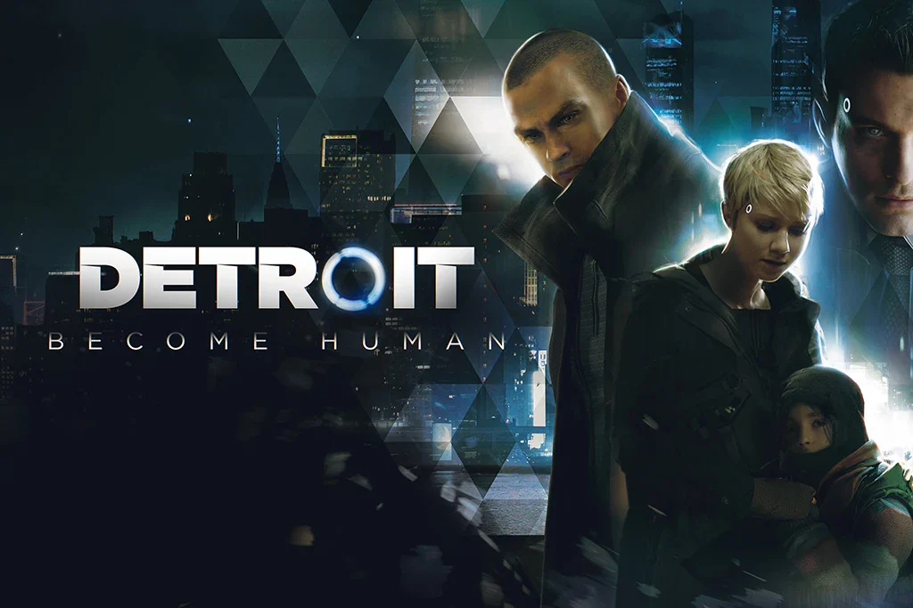

游戏是更高级的叙事媒介吗？重新思考不同形式的讲故事

很长一段时间里，我相信游戏是终极的叙事媒介。
和书与电影相比，游戏似乎什么都有：文字、画面、声音，以及最重要的——交互。它们看起来像一种自然的进化——一种吸收了此前所有形式、再在其上加上能动性的媒介。从这个角度看，游戏理应更擅长讲故事，这几乎是显而易见的。
然而，在花了一个学期开发一款叫《灰色的海浪》（Grey Waves）的叙事游戏之后，我的看法变了。
不是被推翻——而是深化了很多。
“越多越好”的幻觉
乍一看，游戏之所以强大，是因为它综合了多个信息通道。但在实践中，拥有更多表达工具并不保证更强的叙事。
事实上，很多游戏恰恰失败在这些元素不协调。
文字、画面、声音和玩法常常是并行存在的，而不是融合的。玩家可能在读对话、看过场、做操作——但这些层面并不互相强化。它们没有加深体验，反而分散了注意力。
在那些时刻，游戏实际上可能不如书有效。
一本只有文字的小说，可以把读者引入一个高度专注的心理空间。没有互相竞争的系统——没有把你拉走的机制，没有要求注意的 UI。读者可以完全投入作者的意图。
这种专注在游戏里出奇地难以达成。
我们从《灰色的海浪》里学到的
要说清我学到了什么，得先说清我们想做的是什么游戏。
《灰色的海浪》是一部 3D 叙事作品，讲一位中学老师被困在时间循环里，反复经历一场毁灭性地震的那一天。玩家一次又一次回到学校，试图弄清发生了什么——以及是否有什么可以被改变。
游戏围绕两个相互关联的空间构建：
- 一个时间循环世界，地震在其中实时发生（一个短而紧张的窗口，约 96 秒）
- 一个废墟或“记忆宫殿”世界，代表破碎的记忆与情感的余波
每一轮循环，玩家都会收集到更多信息：谁死了？为什么死？哪些选择导致了那些结果？
一开始玩家是盲目行动的。但随着时间推移，知识积累起来，玩家开始做出有意的决定——在极有限的时间里选择救谁、去哪里、做什么。
每种处境都有多种“解法”：
- 蛮力解法（快，但低效）
- 更优化的解法（需要探索和规划）
- 叙事驱动的解法（需要理解角色与情境）
最终，玩家可以救下所有人。
但在最后一刻，游戏揭示了一个事实：这些人从来没有真的被救下。
整个体验是关于直面记忆、愧疚与接受。玩家不是在改变过去——而是在学着理解它。
游戏在哪里变得强大
在搭建这套系统的过程中，我意识到了一件根本的事：
只有当“玩它”等同于“理解它”时，一款游戏才会变得强大。
在《灰色的海浪》里，时间循环不只是一个机制——它就是叙事。
- 重复映照创伤
- 优化映照人想要“修复”过去的欲望
- 发现映照重建记忆的过程
玩家不只是看一个关于悔恨的故事——他们一遍又一遍地演出悔恨，直到意义浮现。
这是书和电影无法完全复制的。
为什么这么难
然而，达到这种程度的融合极其困难。
即使在我们自己的项目里，我们也不断在这样的问题上挣扎：
- 玩家是在专注解谜，还是在理解角色？
- 时间压力是在增强情感，还是在减少反思？
- 机制是在强化主题，还是在分散注意？
玩法和叙事非常容易漂移开。
而一旦漂移，体验就变弱。
这就是为什么很多游戏虽然有丰富的视听元素，却无法交付一个连贯的叙事体验。相比之下，书和电影——恰恰因为更受限——能达成更强的专注感。
当游戏真的奏效时
确实有游戏成功实现了这种融合。
《最后生还者》《生化奇兵：无限》《荒野大镖客：救赎 2》这样的作品，展示了机制、世界设计和叙事如何互相强化。
在这些作品里：
- 玩法呈现角色在情感上面临的得失
- 系统映照主题
- 玩家行动加深叙事意义
每一次游玩都成为对故事的持续强化。
但做到这一点很罕见。
它不仅需要技术能力，还需要设计、美术、叙事和制作之间的对齐。它还需要规模——这往往是小团队做不到的。
为什么其他媒介仍然重要
正因如此，书和电影没有被游戏取代。
它们之所以依然强大，恰恰因为它们的限制。
一本书可以精确地引导思考。一部电影可以通过剪辑和构图控制节奏与情绪。
而游戏，用控制换取了能动性。
能动性带来复杂性。
没有精心设计的话，它稀释意义的可能，不亚于强化意义。
一个更诚实的结论
那么，游戏是更高级的叙事媒介吗？
我不再认为答案是简单的“是”。
我会这样说：
大多数游戏并不比书或电影更强。但一款完美融合的游戏，有潜力超越它们。
游戏并非天生更强大——它们是有条件地更强大。
当机制、叙事和玩家体验对齐时，游戏能创造出独一无二的东西：不只是观看一个故事，而是活在其中。
最后的想法
做《灰色的海浪》改变了我对讲故事的看法。
问题不再是游戏是否更好。
真正的问题是：
我们能不能设计出每一个行动都承载意义的游戏？
如果能，那么游戏就不只是多种媒介的组合。
它们是一种根本上全新的表达形式。